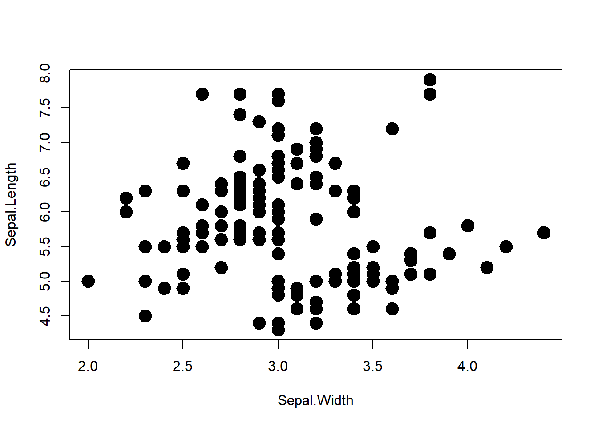
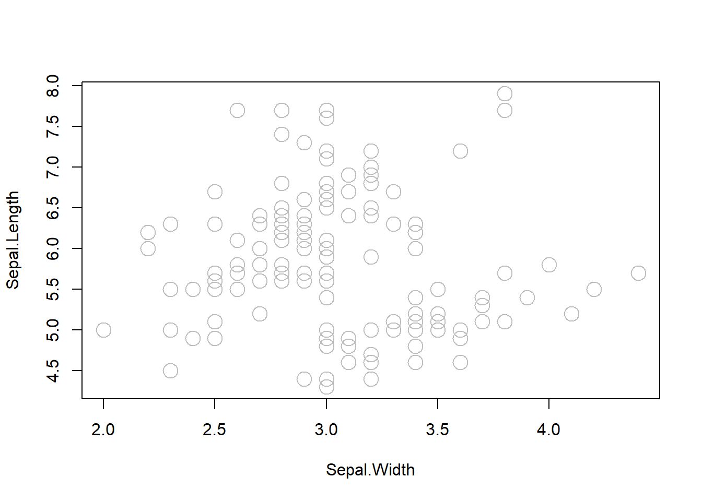
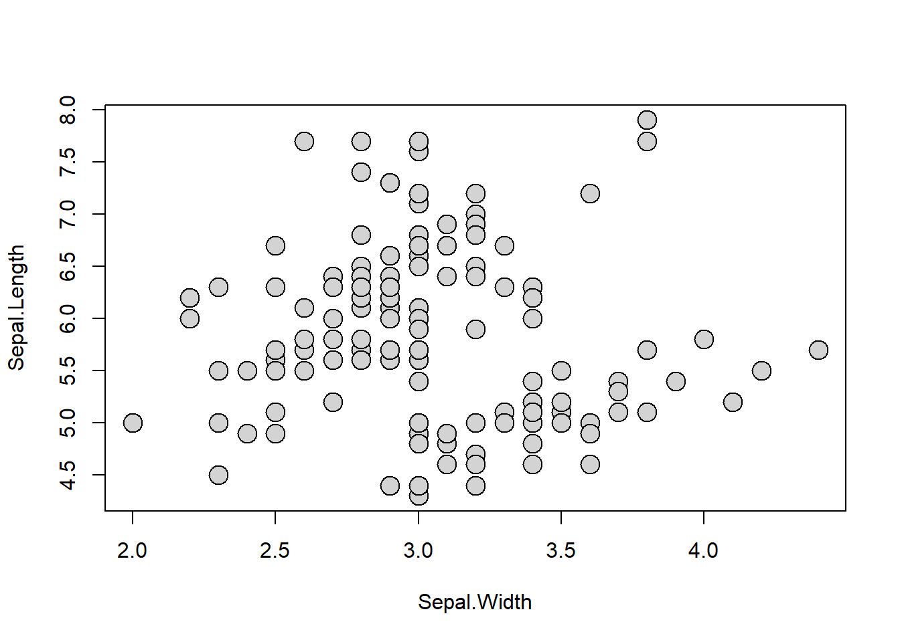

Chapter 11 Appendix: Base Plot
11.1 Overview
R offers a variety of functions that aid in visualizing data. The graphics package in R provides a set of functions for basic graphics (list of functions). To demonstrate the functionality of these graphics functions, I will utilize the built-in iris dataset in R.
head(iris)## # A tibble: 6 × 5
## Sepal.Length Sepal.Width Petal.Length Petal.Width Species
## <dbl> <dbl> <dbl> <dbl> <fct>
## 1 5.1 3.5 1.4 0.2 setosa
## 2 4.9 3 1.4 0.2 setosa
## 3 4.7 3.2 1.3 0.2 setosa
## 4 4.6 3.1 1.5 0.2 setosa
## 5 5 3.6 1.4 0.2 setosa
## 6 5.4 3.9 1.7 0.4 setosa11.2 Plot
When creating a plot, you typically need to specify the formula to define the relationship between variables. For instance, if you wish to visualize the association between x and y (with y on the vertical axis and x on the horizontal axis), the formula would be y ~ x (where the left side of the formula represents the vertical axis). In the iris dataset, you have access to the following columns: Sepal.Length, Sepal.Width, Petal.Length, Petal.Width, and Species. In the subsequent example, we will plot the relationship between Sepal.Length and Sepal.Width:
plot(Sepal.Length ~ Sepal.Width, data = iris)
The data = argument informs the function about the dataset from which the variables (Sepal.Length and Sepal.Width) should be extracted.
11.2.1 Symbol
pch argument. Choose from 1 to 25 (google r plot pch for details)
plot(Sepal.Length ~ Sepal.Width, data = iris,
pch = 19)
11.2.2 Symbol size
cex argument. cex = 1 is the default value. cex = 2 is as twice large as default value.
plot(Sepal.Length ~ Sepal.Width, data = iris,
pch = 19, cex = 2)
11.2.3 Symbol color (border)
col argument (quote "color name" when specifying). Google r color name for color options.
plot(Sepal.Length ~ Sepal.Width, data = iris,
pch = 21, cex = 2, col = "gray")
11.2.4 Symbol color (fill)
bg argument (quote "color name" when specifying). Available for a subset of symbol options (some symbols have pre-defined filled color).
plot(Sepal.Length ~ Sepal.Width, data = iris,
pch = 21, cex = 2, bg = "lightgray")
11.2.5 Label
ylab or xlab arguments. Provide "quoted text".
plot(Sepal.Length ~ Sepal.Width, data = iris,
pch = 21, cex = 2, bg = "lightgray",
xlab = "Sepal width (cm)", ylab = "Sepal length (cm)")
11.2.6 Axis
Delete axes with axes = F and re-draw with box() and axis() functions.
plot(Sepal.Length ~ Sepal.Width, data = iris,
pch = 21, cex = 2, bg = "lightgray",
xlab = "Sepal width (cm)", ylab = "Sepal length (cm)",
axes = F)
box(bty = "l") # L-shaped border lines
axis(1) # 1: draw x-axis
axis(2, las = 2) # 2: draw y-axis, las = 2: make axis lables horizontal
11.3 Boxplot
boxplot() is used when the x-axis is factor-type data (by default, plot() will produce a boxplot when x-axis is a factor variable). In the iris dataset, the column Species is a factor variable. Compare Sepal.Length among species using boxplot().
boxplot(Sepal.Length ~ Species, data = iris)
You can customize as in plot(), but slighlty different.

11.3.2 Border color
border argument.
boxplot(Sepal.Length ~ Species, data = iris,
col = "lightgray", border = "grey48")
11.3.3 Box width
boxwex argument.
boxplot(Sepal.Length ~ Species, data = iris,
col = "lightgray", border = "grey48",
boxwex = 0.4 )
11.3.4 Axis
Delete axes with axes = F and re-draw with box() and axis() functions.
boxplot(Sepal.Length ~ Species, data = iris,
col = "lightgray", border = "grey48",
boxwex = 0.4, ylab = "Sepal length (cm)",
axes = F)
box(bty = "l")
axis(1, at = c(1, 2, 3), labels = c("Setosa", "Versicolor", "Virginica") )
axis(2, las = 2)